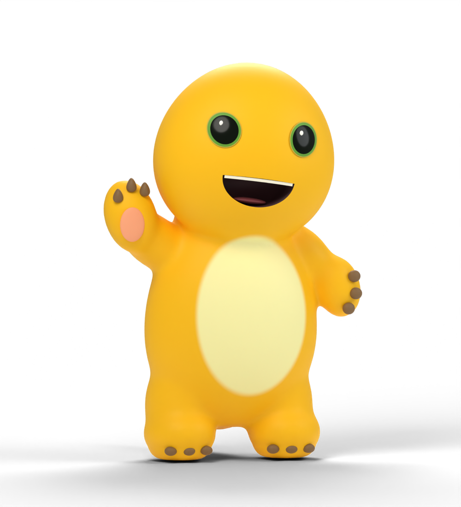
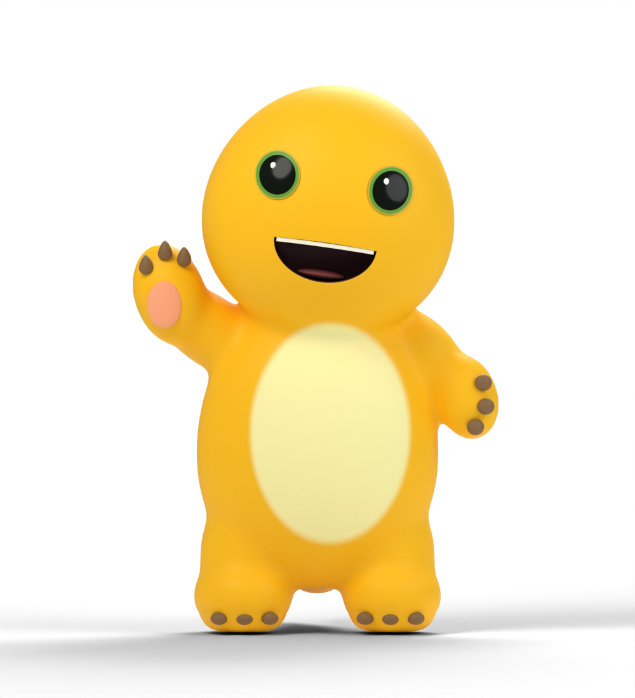
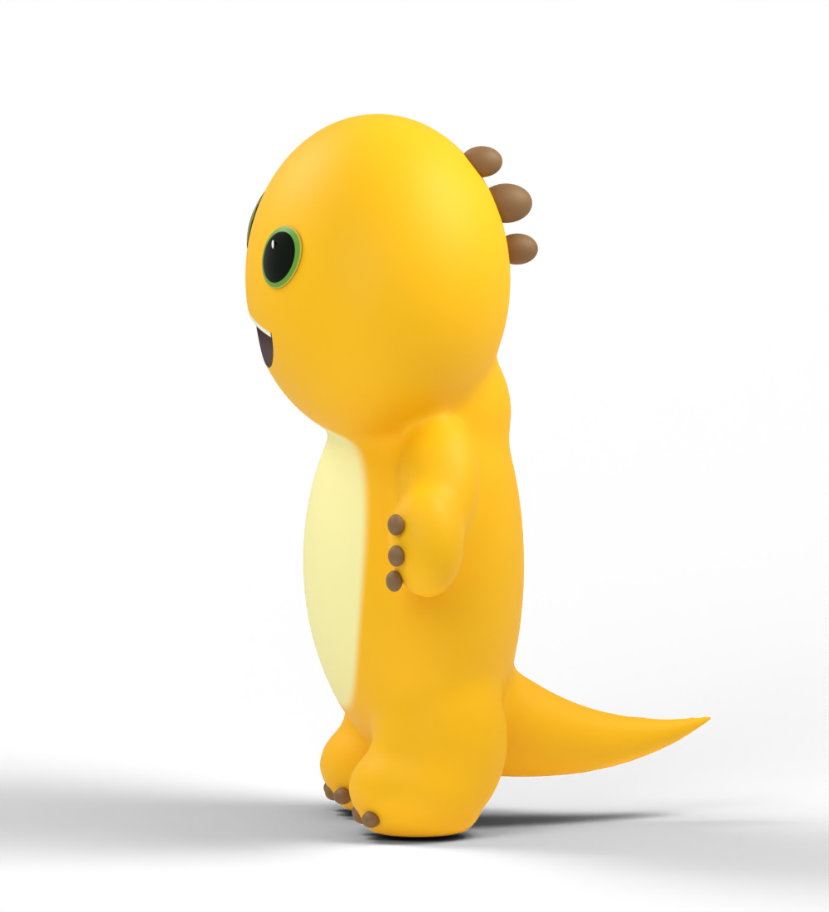

BLENDER 原生工程 / STATIC STUDY V3 / 外观待确认
连续的身体，先从完整造型开始。
这是实际三维场景的静态渲染。头、躯干、四肢与尾巴融合在同一身体网格中；眼睛、口腔和爪等细节独立处理。还没有骨骼、动作或桌宠运行时接入。
用户原照片
 主要外观依据，原文件未改动。
主要外观依据，原文件未改动。当前三维初稿

真实 Blender 渲染。与原图仍有差异，不能把这个版本当作已经认可的最终形象。本轮已修：球状脚、分层浮起的眼睛、突出口腔，以及尾巴横向接在腰侧的问题。仍要继续校准：脸颊和下巴轮廓、四肢与肚子的比例、手掌与爪的形状、皮肤和眼睛的质感。
正面

检查整体比例和左右结构；姿态保留原照片的轻微倾斜。侧面

依据新找到的正侧背资料修正；这不是官方模型，也不是完整的反向还原。原生工程检查与已知限制
独立重开 .blend 并再次渲染；验证身体为一个连通部分、没有非流形边、坐标有限。场景没有骨骼和动画。上述检查只能说明工程有效，不能代替外观与动作质量确认。
当前是高密度静态造型网格，正式动画前需要整理适合弯曲的布线和权重。网页只展示渲染图片，不是运行时桌宠演示。
查看重开验证数据